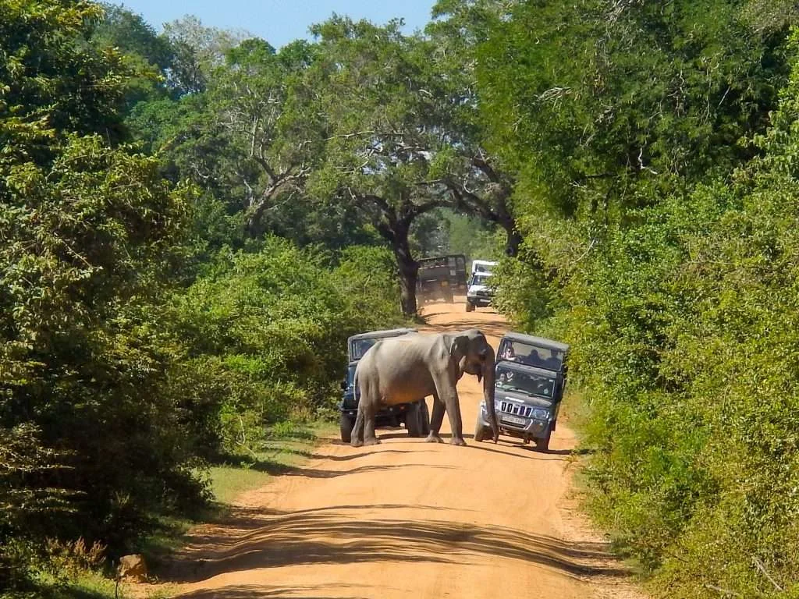
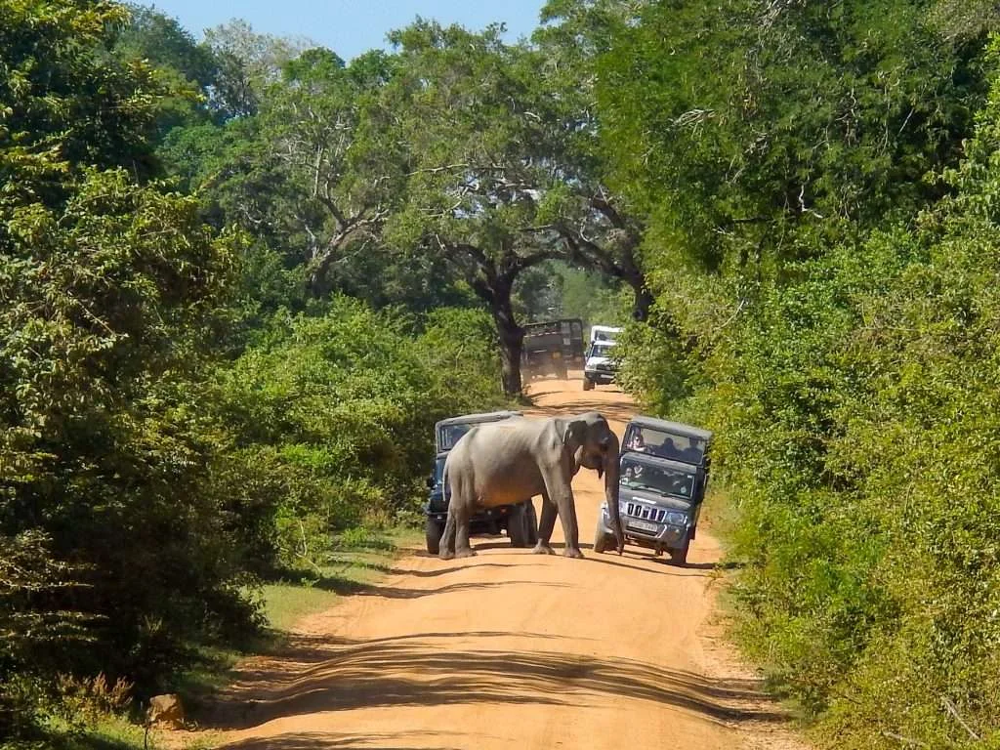

Yala National Park
YALA NATIONAL PARK

Yala National Park is a renowned wildlife sanctuary located in the southeastern part of Sri Lanka. Established in 1900 as a game sanctuary, it has evolved into one of the country's most prominent national parks. Yala spans an area of approximately 978 square kilometers and is situated in the Hambantota district. The park is celebrated for its diverse ecosystems, which include dry and moist monsoon forests, grasslands, and marine wetlands. One of the main attractions of Yala National Park is its rich biodiversity, featuring a wide array of flora and fauna. Notably, Yala is famous for its population of Sri Lankan leopards, making it one of the best places in the world to spot these elusive big cats.
Apart from leopards, Yala is home to a variety of other wildlife, such as elephants, sloth bears, crocodiles, and numerous bird species. The park's picturesque landscapes, including lakes, lagoons, and coastal areas, enhance its appeal for both wildlife enthusiasts and nature lovers. Yala National Park is divided into five blocks, with Block 1 being the most accessible and frequently visited by tourists. Visitors can embark on safari adventures to explore the park's natural beauty and witness its diverse wildlife in their natural habitats. The park's popularity as a wildlife destination and its significant conservation efforts contribute to its status as a must-visit destination in Sri Lanka.
Here are some visitor tips and safari experiences to enhance your trip to Yala
By following these tips and being mindful of the natural environment, visitors can make the most of their safari experience at Yala National Park and appreciate the incredible biodiversity it has to offer.
Timings and Seasons:
Yala National Park welcomes visitors from early morning until evening.
The park experiences a dry season from May to August and a wet season from September to April, impacting wildlife sightings.
Choose the Right Block:
Yala comprises five blocks, with Block 1 being the most popular and accessible for tourists, known for a higher concentration of wildlife, including leopards.
Visitor access is restricted to specific areas to minimize disturbance to wildlife.
Leopard Safaris:
Yala is famed for its leopard population, offering excellent chances for sightings.
Early morning and late afternoon safaris are optimal for leopard spotting due to their increased activity during these times.
Wildlife Diversity:
Yala is home to diverse wildlife, including elephants, sloth bears, spotted deer, crocodiles, and various bird species.
The park's varied ecosystems, such as open plains, forests, and coastal areas, contribute to its rich biodiversity.
Birdwatching:
Yala is a haven for birdwatchers, hosting over 200 bird species like the Sri Lankan junglefowl, painted stork, and crested serpent eagle.
Guided Safaris:
Hiring an experienced guide or joining a guided safari enhances the wildlife experience.
Guides are familiar with the park's terrain, aiding in spotting and identifying animals.
Respect Wildlife and Rules:
Maintain a respectful distance from animals to preserve their natural behavior.
Adhere to park rules, staying inside designated safari vehicles and refraining from feeding wildlife.
Accommodations:
Various accommodation options surround Yala, from luxury resorts to eco-friendly lodges.
Booking accommodations in advance is advisable, especially during peak tourist seasons.
Travel Essentials:
Essential items for a comfortable safari include sunscreen, a hat, water, and binoculars.
Wearing neutral-colored clothing helps blend with the surroundings and avoids startling wildlife with bright colors.

 
